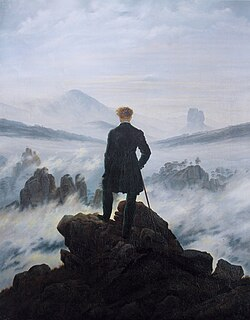

For 60 years, WWF has worked to help people and nature thrive. As the world's leading conservation organization, WWF works in nearly 100 countries. At every level, we collaborate with people around the world to develop and deliver innovative solutions that protect communities, wildlife, and the places in which they live.
O professor disse: Somente a dor coletiva gera a união.
A OMS foi fundada em 1948.

O Caminhante Sobre o Mar de Névoas por Caspar David Friedrich.